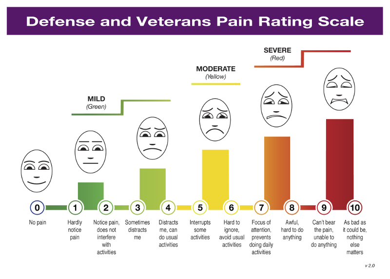
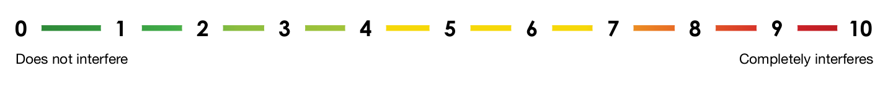
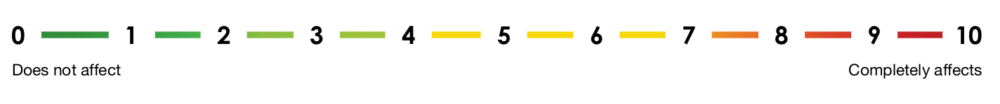
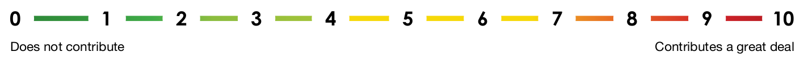

INSTRUCTIONS: For the 1st 3 questions, look at the “Defense and Veterans Pain Rating Scale” and read the descriptions under each number.
and answer the specific pain question by selecting the corresponding number (0 to 10).

1) What is your level of pain right now?
2) In the past 7 days, how intense was your pain at its worst?
3) In the past 7 days, how intense was your average pain?
PAIN SUPPLEMENTAL QUESTIONS
INSTRUCTIONS: For the following 4 Pain Supplemental Questions, please rate how pain has interfered for the past 24 hours by selecting the number.
1) Select the one number that describes how, during the past 24 hours, pain has interfered with your usual ACTIVITY:

Activity:
2) Select the one number that describes how, during the past 24 hours, pain has interfered with your SLEEP:
Sleep:
3) Select the one number that describes how, during the past 24 hours, pain has affected your Mood:

Mood:
4) Select the one number that describes how, during the past 24 hours, pain has contributed to your Stress:

Stress: